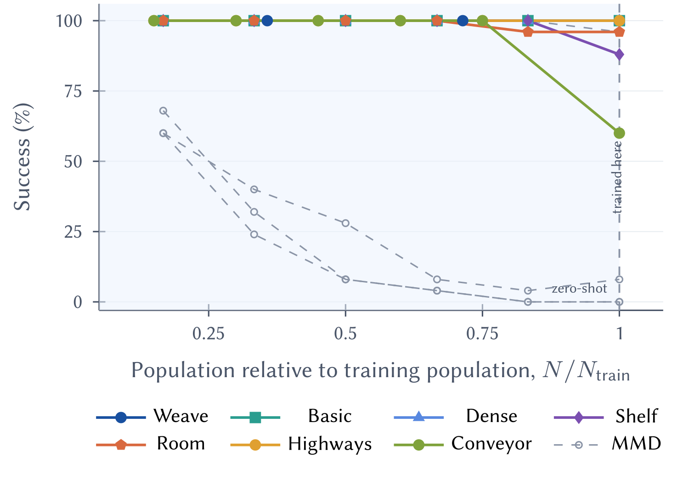

Which interactions matter?
The contextual selector chooses directed edges before the expensive pairwise model is evaluated.
Many robots. Selective interactions.
Learn which robots need to coordinate—and how their corrections work together.
Anonymous research release accompanying the submitted paper
A plausible path for one robot can collide with another. As teams grow, evaluating every ordered pair at every denoising step becomes expensive.
Akule separates two decisions: which pairwise corrections merit computation, and how their effects should be combined. A frozen single-robot diffusion prior supplies motion; learned interactions supply coordination.
The contextual selector chooses directed edges before the expensive pairwise model is evaluated.
Team context determines signed weights, letting useful corrections reinforce or offset one another.
Shared parameters and symmetric aggregation make the architecture permutation equivariant and usable across team sizes.

A frozen single-robot prior predicts goal-conditioned motion.
U selects a directed graph using trajectory and team context.
The reusable R model evaluates only selected pairwise interactions.
G combines corrections through context-dependent signed weights.
Downstream search validates the joint proposal and repairs conflicts.
Weave and SMD use interaction-aware reverse-diffusion rollouts. Highways and Conveyor apply one interaction correction at t=0 to selected independently generated candidates.
Selected findings reported in the submitted paper.
Complete-planner speedups across the evaluated benchmark settings.
The paper reports 8/10 successful ScaledWeave tasks at N=256.
One Weave coordination model, trained at N=28 and evaluated unchanged at N=20 and N=10.
On the Weave ablation panel, learned selection and signed composition yield 32.1 pre-repair conflicts, compared with 94.2 for uniform summation.
Weave N=28 · 30 instances · matched unary prior and pairwise model

| Robots | Akule success | Akule planning | MMD-xECBS planning |
|---|---|---|---|
| 10 | 512 / 512 | 3.128 s | 12.180 s |
| 20 | 256 / 256 | 7.106 s | 33.424 s |
| 28 | 512 / 512 | 29.944 s | 82.909 s |
Complete planning latency includes repair and is averaged over all attempts. Numbers from the final manuscript.
Explore recorded trajectories across open exchanges, structured lanes, and obstacle-rich maps.
Colored disks denote robots; stars denote goals. Each method view preserves its recorded trajectory. Select a method to explore available recordings.
Frozen checkpoints. Saved scenes.
Explicit benchmark contracts.
GIT_LFS_SKIP_SMUDGE=1 git clone https://github.com/akule-diff/Akule.git
cd Akule
uv sync --locked
uv run python scripts/download_checkpoints.py --env weave
uv run python scripts/evaluate.py --env weave --n 28 \
--mode sparse --repairAnonymous research artifact for the submitted AAMAS paper.
@misc{akule2027,
title = {Akule: Fast and Scalable Multi-Robot Motion
Planning via Sparse Interaction Diffusion},
author = {Anonymous},
year = {2027},
note = {Submitted to AAMAS. Anonymous research release}
}